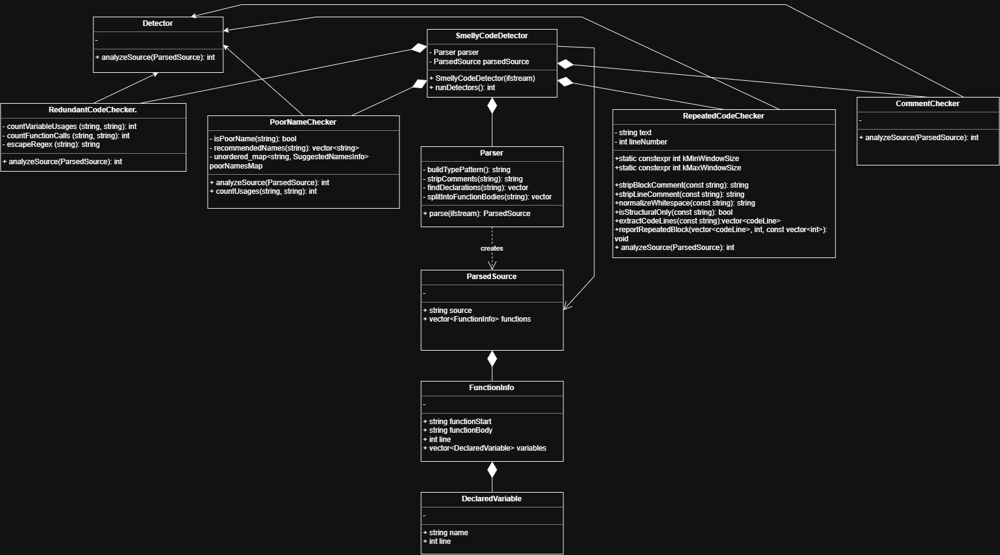

struct
DeclaredVariable
name— the variable's identifierline— line number, relative to the start of its function's body, where it was declared
CS179K · Software Engineering
A static analysis tool that reads a single C++ source file once, then hands the parsed result to a set of independent detectors — each one hunting a different code smell, from dead variables to copy-pasted blocks, and printing what it finds straight to the terminal.
$ ./build/Debug/project4.exe$ Enter the name of the file to read: filename.cpp Warning: Redundant dead/unused code. The variable 'x' is declared but never used (line 12) Warning: Repeated code detected in lines: 3 to 5, 6 to 8 Repeated code: result = a + b; result = a - b; result = a * b; Warning: Poor identifier name detected: 'a' (line 20). Consider using a more descriptive name. Warning: function in line 'calculateCost' has no comments. Warning: Redundant boolean comparison. "true == isReady" can be simplified to "isReady". (line 25) Warning: Redundant conditional statement. 3 separate if-statements each return unconditionally; consider an if/else if/else chain instead. (starting line 30) Warning: function in line 40 has no comments. 7 Smelly code(s) found in the file: filename.cpp
// 01 pipeline
One parse, many detectors. The source file is read exactly once and turned into a shared
ParsedSource; every detector below just reads from it.


// 02 data model
Structs carry data between stages; classes carry behavior. Every detector is a
subclass of the same abstract Detector, so SmellyCodeDetector
can run all of them the same way.
struct
name — the variable's identifierline — line number, relative to the start of its function's body, where it was declaredstruct
functionStart — the function's signature text, e.g. int calculateCost(int itemPrice, int tax) {functionBody — the full text of the function's bodyline — the line number where the function body beginsvariables — a vector of DeclaredVariable, populated by Parserstruct
source — the raw, unmodified source (comments included), since some detectors need to inspect comments directlyfunctions — a vector of FunctionInfo, one per parsed functionclass
parse() — the only public method; reads the opened input file once and returns a fully populated ParsedSource. Called exactly once in main.cpp and shared by every detector.abstract class
analyzeSource(const ParsedSource&) — pure virtual; every subclass scans the shared parsed data and returns its warning count, printing as it finds themclass
class
Parser and one instance of every detector (RedundantCodeChecker, PoorNameChecker, ...)parsedSourcerunDetectors() — calls analyzeSource(parsedSource) on every detector and sums the returned warning counts// 03 implementation
One file per concern. Each module below owns a single smell, or the parsing that feeds all of them.
splitIntoFunctionBodies() — isolates each function's body and starting line into a FunctionInfostripComments() — removes // and /* */ comments before analysisfindDeclarations() — finds declaration statements (int x;, int x = 5;, int a, b;) and extracts name + linebuildTypePattern() — builds the regex recognizing supported type keywordsparse() — orchestrates all of the above into one shared ParsedSourceanalyzeSource() — iterates every FunctionInfo and checks each declared variable for later usecountUsages() — counts whole-word occurrences of a variable name within a function's bodysearchVariableNames() — collects every variable name found in the sourceisPoor() — flags a name as poor, returning recommendations if sostripBlockComment() / stripLineComment() — remove block and line commentsnormalizeWhiteSpace() — strips whitespace to avoid false negativesextractCodeLines() — returns the cleaned lines of codereportRepeatedBlock() — checks the extracted lines for repeated blocks and emits a warninganalyzeSource() — finds uncommented functions; recognizes leading comments, inline comments, body comments, and trailing comments at the closing brace// 04 dependencies
Strips comments, identifies function boundaries, finds declaration statements, counts variable usages.
Reads the input from a C++ source file via std::ifstream.
stringstream reads the whole file in one pass; istringstream splits a function body back into lines to locate declarations.
Holds the shared structures every detector inspects: ParsedSource::functions and FunctionInfo::variables.
Stores raw source, function bodies, variable names, and the regex pattern strings themselves.
// 05 performance
Parser::parse() reads the entire input into one string in a single pass via rdbuf() — the file is read exactly once for the whole program.
Function bodies and declared variables are each computed once in Parser::parse() and reused by every detector afterward.
Fixed patterns (declRegex, declaratorRegex, funcStartRegex) are static const, compiling once instead of on every call.
Used in place of pairwise comparison to detect repetitions.
runDetectors() currently runs each detector's analyzeSource() sequentially — a candidate for future parallel work.
// 06 progress log
What shipped, sprint by sprint. Replace the placeholders below with your own entries.
// 07 credits
Our teams contributions to the project.
Parser Architecture, Redundant Code Checker, GitHub Page Website
Parser Architecture, Poor Name Checker, GitHub Page Website
Parser Architecture, Comment Checker
Parser Architecture, Repeated Code Checker